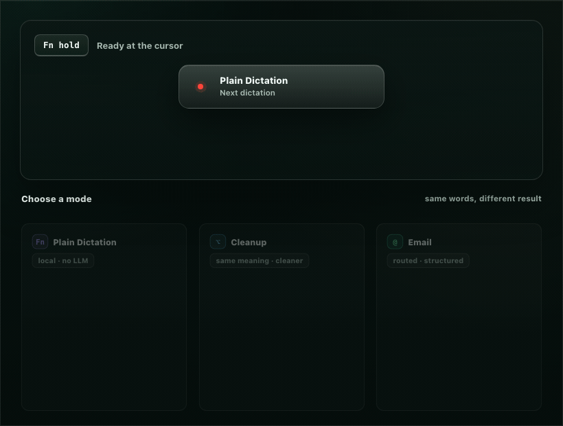
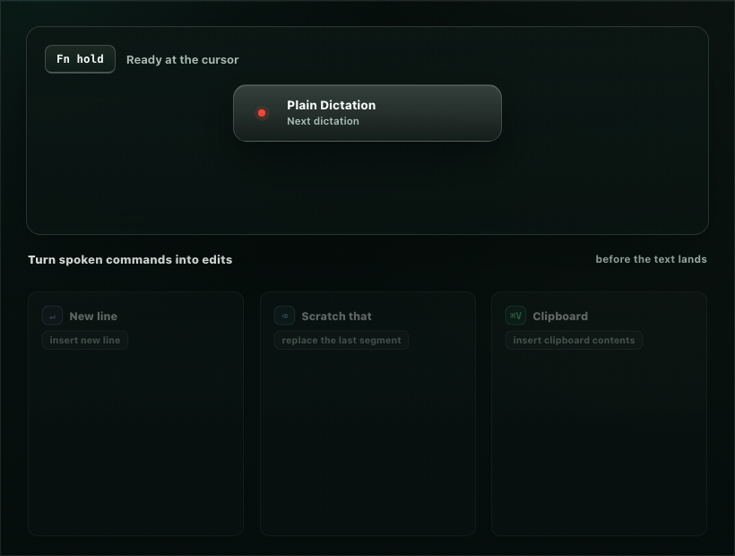

Local speech recognition
Audio is transcribed on your Mac by curated on-device engines. Model weights download on demand and are reused offline.
KeyScribe turns speech into finished text wherever you type. Speech recognition always runs on your Mac, there is no telemetry or account, and optional rewrite modes use only providers you configure.
Hold a key, say the thought, release, and KeyScribe inserts the result as one undoable edit. A mode can keep the transcript plain, polish it, shape it as email, edit selected text, or route by a spoken suffix such as "as an email."

The default path stays local. Power features are explicit, inspectable, and mode-specific.
Audio is transcribed on your Mac by curated on-device engines. Model weights download on demand and are reused offline.
Hosted or local OpenAI-compatible providers can polish or transform text only for modes you enable.
Privacy mode disables context sharing. Best-effort redaction tokenizes recognizable sensitive spans before optional rewrite.
Insert line breaks, paragraphs, tabs, clipboard contents, verbatim spans, and scratch-that corrections before text lands.
Select existing text, speak an instruction, and replace the selection with a rewritten result in the app you are using.
Modes, vocabulary, replacements, connections, prompt fragments, and history live as readable local files.

Speech is messy. KeyScribe lets useful command phrases change the text before insertion, while verbatim spans protect text that should stay literal.
Current builds are pre-1.0 prereleases for Apple silicon Macs. KeyScribe is a menu-bar app, so after launch look for the waveform glyph in the menu bar.
macOS 15+ on Apple silicon. Apple Speech appears only on macOS 26+.
No paid Apple Developer account is needed for a local dev build.